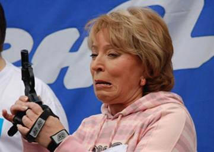

Менее стандартные аргументы
|
Before a man speaks, it is always safe to assume that he is a fool. After he speaks, it is seldom necessary to assume it. H. L. Mencken |
«Дорогой товарищ Варракс, есть такие люди — либералы. Так вот, у самых отмороженных из них заведено так: если кто-то сказал, что в СССР было хоть что-то хорошо, то он однозначно за коммунистов и его следует безостановочно травить. Причем, тех, кто уже и так за коммунистов, это слабо трясет. Зато те, кто раньше о своей причастности к коммунистам не задумывался, после всего этого, как тут верно сказали, “вынужден примкнуть к противоположной стороне”. Само собой, этот человек к коммунистам примыкает, чему мы, коммунисты, очень радуемся. А либералы, напротив, огорчаются.
При тактике “кто сделал хоть что-то на пользу противникам короткоствола, тот за них, следовательно, против нас” эффект в большинстве случаев будет аналогичный. И ряд сомневающихся после такового с ним обращения будет вытолкнут в лагерь оголтелых противников короткоствола с гораздо большим импульсом, чем из-за каких-то там текстов Гоблина или хитрых графиков. Читая ряд комментариев у себя в ЖЖ от сторонников легализации, даже я, при всей моей холоднокровности, ощущал желание послать всех скопом в одно место и громко заявить “все сторонники легализации — полные идиоты”. У меня тормоза присутствуют, поэтому я могу перебороть в себе эмоциональный импульс и выносить суждения про оппонентов, исходя не от их отношения к единственному вопросу, а по совокупности факторов. Однако тормоза есть не у всех. Поэтому с такой тактикой жди пополнения рядов противников легализации. Подозреваю, тебе противоположный эффект нужен.
Меня вообще поражает. Сейчас сложилась ситуация, когда оба лагеря работают преимущественно на пополнение противоположного. Нечто вроде игры в поддавки получается. А причиной тому — агрессия, категоричность суждений и нечистоплотность аргументации с обеих сторон. Может, пришла пора уже децл приглядеться к принципиальности вопроса, нет? На короткостволе вроде свет клином не сходится. Есть ряд вещей, которые на порядки важнее, и сотрудничество в этих вещах намного полезнее, чем вражда на тему легализации.»
Аналогия «СССР и легалайз» — очень кривая, т.к. легалайз — это конкретная позиция по одному-единственному вопросу, а СССР — это много чего, мягко говоря. Но не суть.
Конечно, по обе стороны «баррикады» есть оголтелые идиоты, которые могут подтасовывать факты, заниматься демагогией и проч. Правда, демагогии куда больше со стороны прогибиционистов — см. выше.
Но суть именно в самом вопросе, и только в нем.
И тут все просто: тот, кто выступает против легалайза КС, либо наивный дурак, поддавшийся на демагогию прогибиционистов, либо — с учетом современных реалий — враг русского народа (если еще не понятно, почему — см. заключение статьи). Сотрудничество, говорите? А в чем?
Лично я знаю лишь одну тему, по которой возможно какое-то сотрудничество с либералами — это именно что легалайз КС. Они «за», так как «за свободу».
Других общих тем как-то не вспоминается. Даже антиклерикализм тут не подходит: да, либералы против клерикализма, но они одновременно за свободу зомбификации населения (запретить симфонию чиновничества и МП РПЦ, но разрешить разновсяческие секты в ассортименте), да и вообще формат у них весьма часто неподходящий, вплоть до «раз РПЦ против гей-парадов, а вы против РПЦ, то должны быть за ней-парады».
***
Еще довод.
«Одно забытое вами следствие в том, что в стране с разрешенным ношением оружия полиция будет действовать как фашистские карательные отряды - от животного страха за свою шкуру.
Прямой пример этому - США, где каждый полицейский - трусливый и грязный подонок, для которого застрелить в замысловатой (а часто и в совсем НЕзамысловатой) ситуации - единственный выход спастись от тягомотины разбирательств, судов и т.д. Т.е. "стрельба по конечностям", "чтобы ранить и обезвредить" не существует как жанр. Стреляют ВСЕГДА чтобы убить, и ОЧЕНЬ ЧАСТО чтобы "закрыть дело"
Примеров - тысячи. Подросток в машине - полиция его расстреливает (она не знает, что за подросток и т.д. - им что-то кажется подозрительным, и дабы не подставляться самим, они сначала убивают его "из самозащиты" - а вдруг он выстрелит через дверь или из окна).
Полиция расстреливает тех, кто держит в руках какие-то предметы - даже если это пластиковые бутылки из-под воды, если это бездомные и несмотря на то, что дистанция до этих людей - 10, 15 шагов, и ни малейшей возможности приблизиться они не имеют
Полиция расстреливает людей применив к ним "Taser", электрошоковый прибор. Поскольку они боятся, они сначала выстреливают из Taser'а иголками на проводках, чтобы киловольтными электрошоками парализовать его мышцы (в случае, который я помню, человек просто сидел на ступеньках дома, в окружении других членов семьи и/или соседей). Одновременно они орут "Руки из карманов! Руки из карманов!" и секунд через 10-15 (там было видео) стреляют - как я объяснил выше, только, исключительно на поражение, потому что иначе в США никогда не стреляют.
Проблема? - его хотели допросить по какому-то там делу, но при пробивке по базе данных выяснилось, что он служил в каком-то спецназе и унего есть разрешение на ношение оружия.
Поэтому он был просто убит на глазах у всех.
Наказания полиция за убийства не несет, никакого. Максимум - временное отстранение с сохранением оплаты пока идет скандал, потом перевод, часто с повышением.
Еще один занятный факт - в случае стихийных бедствий и т.д., когда население пытается просто выживать, полиция и войска направленные на "помощь" начинают вести себя как карательные отряды - они устанавливают блокаду, с отключением воды, отстреливают население (в частности и за то, что в заблокированном городе те пытаются выносить продукты из магазинов). При этом не оказывается никакой помощи, все припасы воды и еды направляются для снабжения блокирующей армии, а населению - если физически сможет - приказывают выходить в пункты концентрации.
Которые выглядят как концлагеря - и из которых населения потом развозят по принудительным "лагерям переселения" которые находятся под вооруженной охраной, и из которых выйти нельзя.
Это я вам пересказал то, как были организованы действия федералов и FEMA во время потопа в Новом Орлеане. Я в журнале очень подробно писал тогда на эту тему»
Отключить воду в затопленном городе — сильный ход. Ладно, это я так, к слову…
Не буду изобретать велосипед, повторю чужой ответ (извините, авторства не сохранил):
«Здесь и далее Америка = государство США.
Так вот, обсуждение этого факта затрудняется тем, что Америка большая. В ней 300 млн человек, and counting.
Поэтому на каждую жертву произвола, тихо остывающую в кустах, найдется 150 человек, которым полицейские улыбнулись, которых обняли и поцеловали в живот, показали дорогу до дома и вообще всячески содействовали в отправлении гражданских обязанностей.
Ментовский беспредел он везде беспредел — просто в США полиция старается делить людей на нормальных и нет. Асоциалов мочит только так (сцена из “Брата-2” где Sir, relax sir — довольно-таки лживая и не отражает среднестатистическую ситуацию) а вот “чистой публике” улыбнется и поможет сумку донести, али дорогу перейти, али еще как. Ну и опять же — их 300 млн., если полиция убьет пару десятков людей в рамках той же социальной программы — то это в рамках общества незаметно, и восполнится приростом населения в этот же день.
Всплески бывают, когда случайно под раздачу попадают известные люди,.— помните, была история с каким-то известным американцем, которого убили с бутербродом в руке?»
То же самое могу подтвердить и на своем опыте — если с патрульными разговариваешь вежливо и с уважением, не качаешь права (но их знаешь), и выглядишь не как алкаш или гопник (или наоборот — как эмо какое-нибудь), то эксцессы маловероятны даже в нетрезвом состоянии.
***
А вот еще одно обоснование «почему не надо КС гражданам»:
«Ты идешь по улице, у тебя на пути двое смертным боем избивают человека. Третий рядом бьет даму кулаком в лицо, поддевая ее ногой в живот. Дикие вопли, истеричный мат. {…} Тот, который бьет бабу - это я, старший оперуполномоченный в молодые годы. Как только ты достанешь оружие, я закроюсь бабой и открою по тебе беглый огонь. (Умышленно, чтобы ты в нее попал, а не в меня.) То же самое сделают остальные. Если тебя не убьют сразу, а только покалечат, мы приложим все усилия для того, чтобы подвести тебя под статью. (Мы тебя задержим на месте. При задержании изобьем до полусмерти. ) Называться она будет "вооруженное нападение на сотрудника милиции". (Мы таких всегда бьем особенно старательно.)
Все, кто принимал участие в процессе, ко мне присоединятся, ибо ты хотел нас убить. (Да, это их служебный долг.) После этого я как опер приложу все усилия к тому, чтобы в камере тебя немедленно от%арасили. (Это очень просто. Даже не представляешь - насколько. Ты вот живешь, и не знаешь - как просто твою жизнь сломать. Только что был человек: сын, отец, брат, муж. А потом чик - и нет тебя.) Потому что таким как ты бесполезно объяснять словами - такие понимают только грубую силу. Так тебе сразу станет понятнее, на что похож реальный мир. В суд ты прибудешь не только с разорваным о%ком, но еще и с диагнозом "вооруженное нападение". Слушать там будут сотрудников милиции, а не тебя. После этого ты сядешь. А потом я сделаю так, чтобы ты тихо сдох в каком-нибудь петушином углу под нарами в лагере. И так оно и будет, не ты первый. (Ага. И это будет ничуть не труднее.) Ибо мы очень не любим вооруженных дураков (Страшно не любим), мешающих исполнять служебные обязанности. И стараемся делать так, чтобы они не мешали работать нам и не мешали жить людям. (И делаем).
Возможен и другой расклад. Тот, который бьет тетеньку - это тоже я, только в более зрелые года (Следует понимать: просто вооруженный гражданин, не мент). На твои крики я сразу выну пистолет. Со второго твоего слова я пойму, что ты - не мент, а лох. После чего закроюсь бабой и открою по тебе огонь. (То, что ты лох - видно за версту даже по лицу и одежде. Поверь на слово). То же самое будут делать два товарища (Забегая с двух сторон). Ибо ровно такую же угрозу ты, вооруженный идиот, представляешь для них. Втроем мы тебя убьем. На этом твои детские мечты закончатся.»
Сократим тираду до ключевого смысла, получим: «Нас трое, и мы можем бить женщину, убить тебя или сломать тебе жизнь. А ты — лох.»
Стандартная позиция гопника по отношению к обычному человеку: ты лох, а я четкий пацан с корешами, и поэтому ты никто, а я король. В натуре.
Что это доказывает, кроме того, что кучей, да еще и с превышением полномочий можно устроить человеку большие неприятности — как-то не ясно.
Кроме того, гражданин с КС — как это любят прогибиционисты — a priori выставляется полным идиотом. Мол, увидел, стал в позицию мишени и начал из нее орать «Стой, стрелять буду!» — тут-то и получит по обойме из трех стволов.
Как будет реально?
Во-первых, задержание с применением силы — это вовсе не «бить смертным боем». Конечно, приложить могут и весьма увесисто, но долго бить на улице не будут — наручники наденут и увезут. Так что ситуация в том виде, как описана, — мечта гопника-садиста, а не реальные действия правоохранительных органов. Знаете ли, заметно, когда грубо задерживают, а когда — просто избивают. Даже если есть настрой «а сейчас преступник при задержании будет сопротивляться», это именно что быстро делается. Сильно, но быстро — на долгое избиение на улице никак не похоже.
Что касается «вооруженного нападения на сотрудника милиции» — то адвокат это разнесет с ходу: определить это со стороны в такой ситуации было нельзя в принципе, а если имярек стреляет после того, как ему предъявили удостоверения — это уже совсем другая ситуация.
Во-вторых, вариант «а нас трое крутых перцев, а тут лох с пистолетом» — уже рассматривался выше, и не раз. Вот объясните, зачем трое с пистолетами — не шпана какая-нибудь — будут избивать женщину на улице? Несостыковочка. Т.е. — опять же понты гопника: «я с пацанами крут, а все остальные — лохи педальные».
***
Еще оригинальная позиция:
«Мне, честно говоря, легалайз вообще пофиг. Зато мне не пофиг всевозможные манипуляции с обеих сторон. Ибо они свидетельствуют о том, что население думать вообще разучилось. А благодаря постоянным манипуляциям, так и не научится обратно.
Уровень преступлений с оружием на пресловутом графике порядка статистического шума. 80 или 200 штук для трех с половиной миллионов населения - ерунда полная. Одна появившаяся банда отморозков может данный показатель в разы поменять. Более того, его может ощутимо поменять даже один единственный маньяк. Какие-то выводы при сотне преступлений и при десяти тысячах легальных пистолетов - блеф или махинация. Что-то конкретное можно сказать, если количество пистолетов хотя бы пары сотен тысяч достигнет.»
А мне вот легалайз не по фиг.
Согласен, что выводы (реплика касалось графика преступности в Литве, там слишком мало данных, чтобы статистика была достоверной) вида «уменьшилось на 80%» — маразм. Однако — еще раз — многие противники легалайза заявляют, что кол-во преступлений увеличится, а график однозначно показывает, что НЕ увеличилось. Это — факт.
Дополнительно график действует на тех, кто не имеет понятия о статистике, в правильном направлении.
Конечно, я за то, что должно расти кол-во интеллектуалов, которые сами в состоянии проанализировать факты и не поддаются на манипуляции.
Но подавляющее большинство на интеллектуалов не тянет и поддается на манипуляции. Раз этого не избежать, то пусть они верят в то, что правильно (с моей т.з.), а не наоборот. Врать «в свою пользу» — разумеется, не надо, но своих надо поправлять, а врагов — разоблачать. Да-да, наши разведчики и ихние шпионы; а вы как хотели?
Параллельный пример: современная ситуация в России. Проблему мигрантов, засилия жидов (см. определение у Мухина) и т.д., на серьезном уровне понимает мало кто.
Поэтому «Россия — для русских» или «Бей жидов — спасай Россию» вполне правильные лозунги, так как некто с IQ 70 вряд ли будет читать трактат на 500 страниц, а вот пользу, действуя согласно лозунгам, статистически принесет (хотя будет приносит и некоторый вред, так как тезисы «Россия — только и исключительно для русских» и «Бей всех евреев» — неправильные, а поймет он именно так).
Манипуляции, конечно, не должны быть топорно-геббельсовскими. Однако действия, направленные не на коррекцию, а на разоблачение правильных мифов (миф — это не синоним «лжи»!) — однозначно действие против, а не нейтральное.
Заключительный тезис этого разговора:
«Понимаю твою точку зрения. Однако же не разделяю. Потому что такие люди (идиоты) очень ненадежны. Мне нужно понимание вопроса и хорошо осознанный моральный императив, а не слепая вера.»
Добро пожаловать в реальный мир (с).
В ближайшем окружении мне, разумеется, не нужны такие идиоты. Но не нужны и наивные идеалисты, которые считают, что всех можно перевоспитать, а пока не перевоспитались — пусть делают, что хотят.
***
Еще прогон:
«Причина запрета на огнестрел лежит в той же плоскости как и запрет на смертную казнь. Человеку свойственно ошибаться. Нормальное правосудие (не будем о Российском) считает, что цена одной жизни невинно уитого по неправильному следствию и решению суда стоит и денег и права на месть огромного числа людей, в том числе и заслуживающих смерти.
Такая же проблема есть и с оружием. Я плохо верю в то, что человек однажды убив (не на войне, а в жизни, хотя и про тех кто с афгана и с чечени много можно рассказать разного) будет жить спокойно и со спокойной душой. Наличие уебанов, которые врут, что им на все насрать, мне не интересно. Я достаточно много видел в жизни калек, которые так и не смогли простить себе и своей стране, которая дала им в руки автомат и заставила убивать. Эти люди не виноваты, но они не могут с этим спокойно жить.
Кстати я знаком с фермером, который в 90-х смог отстоять себя с помощью оружия. Он спился, он реально просто не смог жить с фактом, что он завалил людей, трижды виноватых. Но он не смог жить, так как у него есть совесть.
Я уже писал, основной причиной для меня делающей оружие неприемлемым - это не факты от Гоблина о невозможности применить оружие, в случае грамотного нападения (хоть он трижды прав - дело не в этом), не наличие примеров с превышением и ни наличие правильного применения.
Для меня главное, что разрешая применять оружие и покупать его для самообороны, мне, моей семте, моим друзьям предлагают самим делать выбор, заслуживает ли человек умереть, или нет.»
Понятно, что проекция.
Но как показательно — имярек с ходу назвал уебанами тех, кому насрать на то, что они пристрелят явных отморозков. Мол, как же так — человека убили, и не переживают!
Ох уж мне эти интеллигенты… Напомнило, кстати, давнишний «круглый стол» с Кураевым по фильму «Брат»: «проблема: в отличие от предыдущих “героев нашего времени” у Данилы нет внутреннего конфликта. Согласно русской традиции, не может быть героем человек, у которого нет рефлексии, у которого нет стука совести. У персонажей, прошедших мясорубку Великой Отечественной войны, в лучших фильмах, в лучших книгах это было. Даже в окопе, даже в той священной войне вдруг появляется переживание по поводу противника, этого парнишки, моего сверстника, или человека, у которого дети там, в Германии. Могу ли я и должен ли я его сейчас убить или нет? Но Данила беспроблемен — в нем нет внутреннего кризиса, нет внутренней оценки того, что происходит.»
«Тварь я дрожащая или право имею» — известная дилемма. Попробовал Раскольников выяснить, понял, что лично он — второе. И что, теперь всем русским надо быть тварями дрожащими, не имеющими право убить врага без ненужных — и даже вредных! — рефлексий?
Обратите внимание: имярек именно что боится ответственности за выбор. Мол, как же так: придется «самим делать выбор, заслуживает ли человек умереть, или нет»!
При этом почему-то не учитывается, что стрелять можно и не на поражение — целью является именно остановить, а не убить. В принудительном порядке покупать и применять тоже никто не заставляет — но по этой причине имярек вообще против продажи КС.
Типичнейшее «раз я боюсь оружия, то его надо вообще всем запретить!»
Пишет lokamp:
«Аргумент первый — а у Вас хватит духу выстрелить в человека?
Как говаривал товарищ Сухов: “лучше бы, конечно, помучиться”. Во-первых, у каждого человека свой уровень психологической подготовки. Среди моих знакомых много служивших и много воевавших — не думаю что они войдут в глубокий гамлетовский ступор Эбыть иль не быть, стрелять аль погодить ишшо”, если их жизни будет угрожать опасность. Вторая группа людей не воевавших, но рефлексы отработаны до автоматизма ежедневными тренировками. Откуда там время на подумать? Мигнула в мозгу лампочка “опасно для жизни” и все, получите и распишитесь. Ах, вы уже не дышите, ну надо же, ну тогда можете не расписываться, лежите… Так что их реакция закончится вбитым рефлексом “if clear, hammer down, holster”… Третья группа граждан — да, могут впасть в глубокий ступор. До дрожи в коленях и заикания. Но эти люди и в повседневной жизни как правило не оказывает никакого сопротивления. Ни хамству, ни агрессии отпора не дадут, даже защищая себя... Кстати у таких и оружия как правило нет — они его неосознанно боятся. Для них оружие это символ чего-то страшного, символ силы, которой они привыкли подчиняться, а не управлять ею. Кстати, про символы. Само оружие не стреляет и не убивает — убивает человек. Оружие — это инструмент, а не символ.»